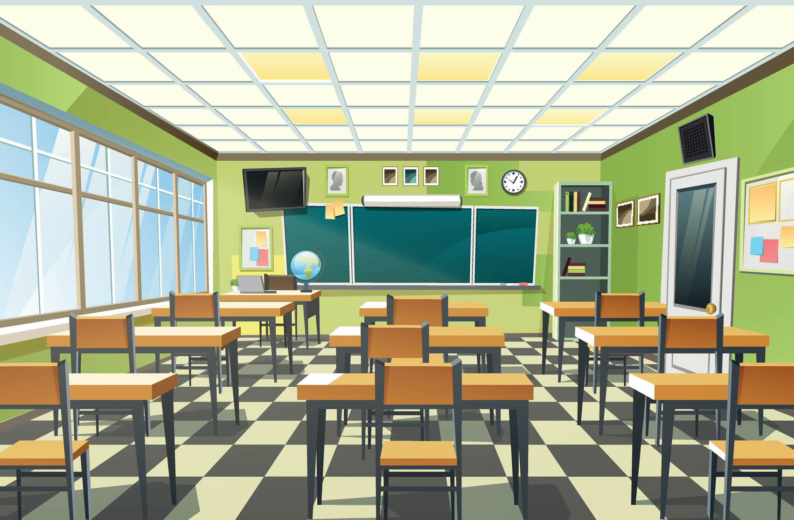

Dentro del plantel existen diversos recursos que ayudan a los estudiantes a continuar con sus estudios y mejorar su desempeño académico y emocional. Es importante conocerlos para poder utilizarlos cuando sea necesario.
Las tutorías permiten reforzar materias en las que el estudiante tiene dificultades. Los docentes brindan apoyo personalizado para mejorar el aprendizaje.
El área de psicología escolar ofrece acompañamiento emocional, orientación y apoyo en situaciones personales que puedan afectar el rendimiento académico.
Estos recursos existen para apoyar a los estudiantes en su formación. Es importante saber que no están solos y que siempre hay opciones de ayuda dentro de la escuela.
